I am a Product Designer who starts with questions. I began my career in South Korea and now work in Vancouver as a Senior Product Designer and Product Manager. Over eight years, I have stayed close to the details of the product while taking responsibility for teams, schedules, and product direction.
My role expanded, but I stayed close to design
I began as a hands-on Product Designer. Later, I also worked as a Design Manager, Project Manager, and Product Owner. These responsibilities often overlapped within the same project.
Working across these roles changed the way I see design. A screen is only one part of a product decision. I also consider what the user needs, what the team can build, what the business must decide, and what it takes to launch.
AI makes the work faster. It does not decide what is worth making
I use AI to reduce repetitive work and test ideas faster. But experience and judgment still matter when deciding which problem to solve, what to leave out, and how the product should work for people.
Eight years, in five lines
I wanted to turn intuition into a standard we could share
Product decisions had to make sense to users, clients, business teams, and developers at the same time. Experience gave me intuition, but intuition alone was not enough to explain why one direction was better than another.
That is why I pursued a master’s degree in Service Design. My research, “A Study on Colors to Improve Kiosk Usability for the Elderly,” examined how color could make self-service kiosks more usable and accessible for older adults.
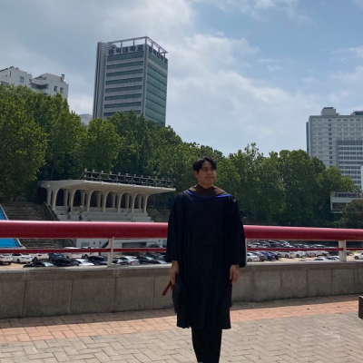
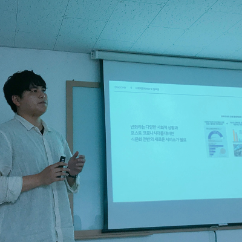
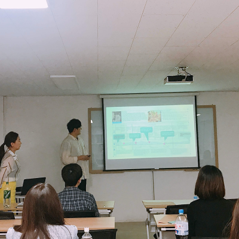
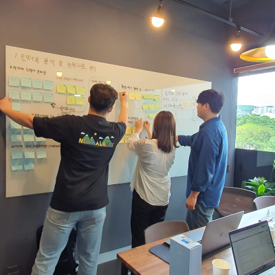
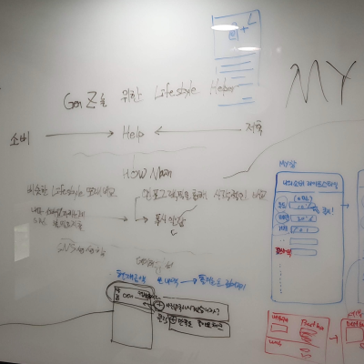
I learned that trust is built in the small follow-through
In South Korea, I worked as both a hands-on designer and a team lead. On any given project, that could mean reviewing a flow, giving design feedback, resolving a stakeholder disagreement, or helping the team decide what had to ship first.
Trust was built through the small, repeatable parts of the work: listening closely, explaining decisions clearly, and finishing what I said I would do.
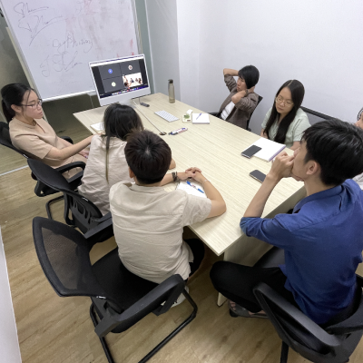
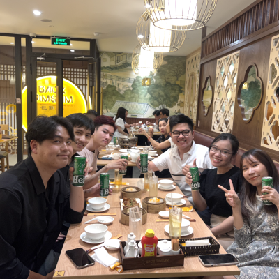
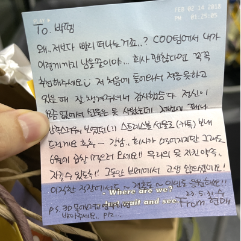
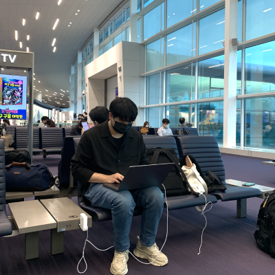
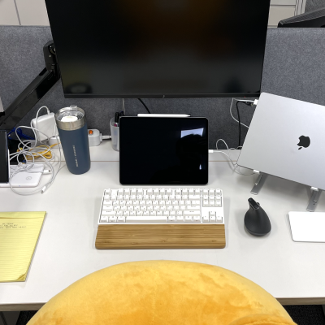
Military service taught me to finish the work someone else was waiting for
In my early twenties, I spent about two years serving at military headquarters.
The work involved coordinating people, schedules, documents, and administrative requests. A small omission could immediately affect someone else’s work. I learned to stay calm, make responsibilities clear, and finish what others were waiting for.
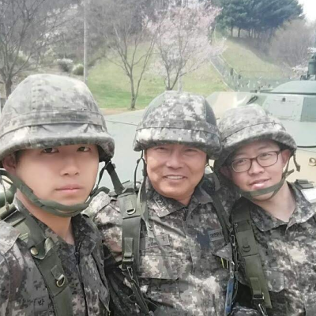
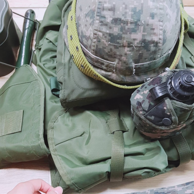
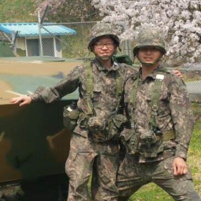
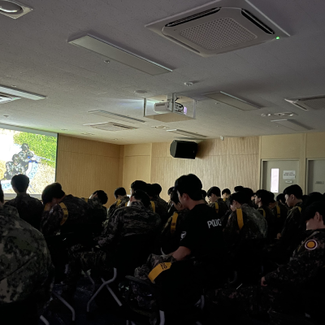
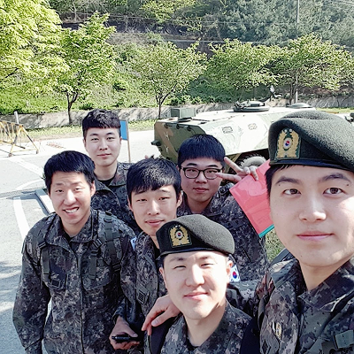
Through ADPList, workshops, and community programs, I review portfolios and talk with designers about product thinking and career decisions. Those conversations show me where designers are getting stuck and what they are trying next.
I also run a design community in South Korea and host in-person events in Vancouver. I like creating opportunities for people to compare how they work, share what worked, and decide what they want to try next.
Side projects let me follow a question all the way through
Client work usually begins with a problem that already needs an answer. A side project begins with a question I choose myself. I look for people who have the problem, make the smallest useful version, and watch what they actually do.
Some ideas stop early. Others grow into products. Either way, the point is to replace an assumption with something I can learn from.
Time away from work shapes me too
Travel and cooking are not extensions of my job. They are simply parts of the life I value: stepping out of routine, paying attention to unfamiliar places, and caring for my family in an everyday way.
I travel because I like it
Travel helps me step away from routine and find my own pace again. I like walking through unfamiliar places, meeting people with different backgrounds, and remembering small moments along the way.
I still do not have a complicated answer when someone asks why I travel. I simply like it, and that feels like enough.
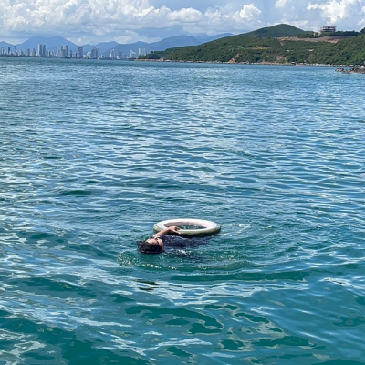
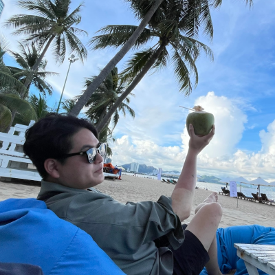
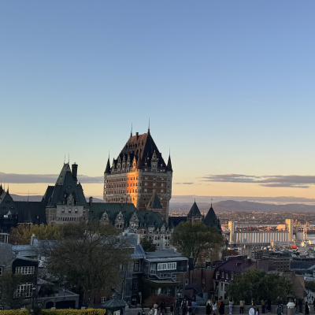
Cooking is how I take care of my family
I studied cooking before moving into design, and it has stayed with me as a long-time interest.
These days, I usually cook for my wife and son. Choosing a menu, preparing ingredients, and making a meal is the most familiar way I care for my family.
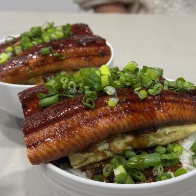
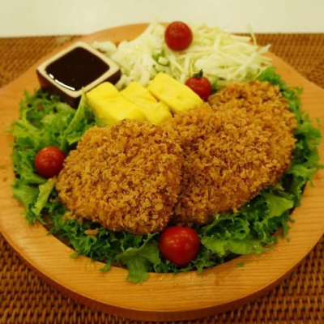
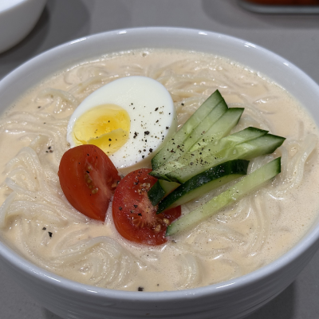
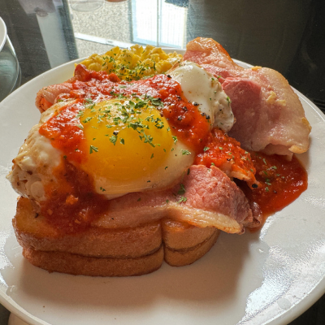
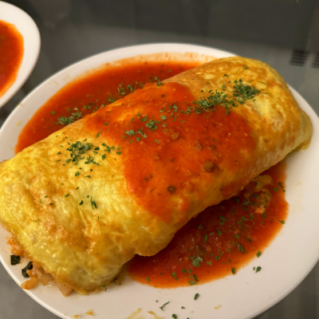
The work itself continues in the case studies
This page explains who I am and how I came to work this way. The case studies explain the problems I faced, the decisions I made, and what I built with the team.